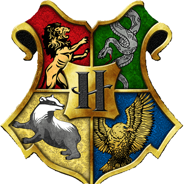

 Rowena Ravenclaw

Ravenclaw es una de las cuatro casas que componen el Colegio Hogwarts de Magia y Hechicería, fundada por Rowena Ravenclaw, quién tuvo una hija, cuyo fantasma es la Dama Gris la cual fue asesinada por el Barón Sanguinario. Su hija le robó la diadema que le pertenecía y huyó a los bosques de Albania, lugar donde fue asesinada, y donde años después, Lord Voldemort encuentra la diadema y la esconde en la sala de los menesteres, en el Colegio Hogwarts de Magia y Hechicería. Se dice que fue Ravenclaw quien le puso el nombre al castillo. Los miembros de esta casa se caracterizan por su ingenio, aprendizaje y sabiduría. El símbolo animal emblemático es el águila, y el azul y el bronce son sus colores. El Jefe de Ravenclaw actualmente es Filius Flitwick. Ravenclaw corresponde aproximadamente al elemento aire, y es por eso que se eligieron los colores de la Casa; el azul y el bronce representan el cielo y las plumas de águila respectivamente, ambos tienen mucho que ver con el aire. El reloj de arena de las puntas de Ravenclaw contiene zafiros azules.
La casa Ravenclaw premia el aprendizaje, la sabiduría, el ingenio, y
el intelecto de sus miembros. Por ello, muchos Ravenclaw tienden a
tener talento académico y a ser estudiantes motivados. Los Ravenclaw
también se enorgullecen de ser originales en sus ideas y métodos. No
es raro encontrar a estudiantes de Ravenclaw que practiquen diferentes
tipos de magia que otras casas podrían tratar de evitar. Los
estudiantes de Ravenclaw también pueden ser peculiares y poseer
intereses intelectuales inusuales. Generalmente aceptan con entusiasmo
a estos excéntricos. A menudo trabajadores y diligentes, como suele
ser el caso de los intelectuales con predisposición por los
académicos, se sabe que algunos de los alumnos clasificados bajo el
águila de bronce azul se inclinan a descartar ciertas expectativas
sociales en aras de satisfacer su propia curiosidad intelectual.
Algunos de estos finalmente también terminaron siendo no solo
aceptados sino incluso celebrados, a pesar de haber sido inicialmente
objeto de desprecio por sus diversas rarezas. Luna Lovegood, por
ejemplo, fue una de esas estudiantes: excéntrica para decirlo en su
forma más suave, era una estudiante de Ravenclaw que inicialmente fue
intimidada por su abierto desafío a la convencionalidad, pero
finalmente se convirtió en una célebre naturalista mágica y reconocida
por su participación en el legendario Batalla de Hogwarts y membresía
pasada en el Ejército de Dumbledore. Otro ejemplo sería el profesor
Filius Flitwick, un medio-duende que podría haber enfrentado el
desprecio por su baja estatura antes en la vida, pero se convirtió en
un renombrado Campeón de Duelos y, posteriormente, en uno de los
mejores y más conocedores Maestros de Encantamientos en la totalidad
de la mundo mágico durante su empleo en el Colegio Hogwarts de Magia y
Hechicería. (El mejor, según algunos de sus alumnos). Los Ravenclaw
tienden a sentir curiosidad por el mundo y prestan atención al mundo
que los rodea. Se sabe que los Ravenclaw son lógicos y racionales.
Además, los estudiantes de Ravenclaw tienden a tener habilidades
relacionadas con la memoria. Garrick Ollivander, por ejemplo, poseía
una memoria eidética y puede recordar cada varita que ha vendido, y
Gilderoy Lockhart tenía un talento excepcional en el encantamiento de
la memoria. Aun así, no todos los Ravenclaw estaban motivados por la
destreza académica. Ejemplos de tales individuos incluyeron a Gilderoy
Lockhart y Cho Chang, quienes buscaron usar el buen nombre y la fama
de su casa, las expectativas inherentes de cierta destreza académica
que viene al ser clasificadas en ella, así como la habilidad a menudo
algo natural de su miembros para ganar popularidad entre sus pares, lo
que particularmente fue el caso de los primeros, demostrando ser
cierto el hecho de que un buen estudiante no necesariamente es un buen
brujo o mago.
Minerva McGonagall era una Hatstall, con rasgos de Ravenclaw y
Gryffindor aproximadamente iguales; el Sombrero Seleccionador
finalmente la clasificó en Gryffindor. Hermione Granger también fue
considerada para Ravenclaw debido a su inteligencia, pero el sombrero
finalmente se decidió por Gryffindor una vez más. Filius Flitwick
estaba en la misma situación en el momento de su Selección, pero en su
caso, el Sombrero se decidió por Ravenclaw en lugar de Gryffindor.
Isolt Sayre, fundador de Colegio Ilvermorny de Magia y Hechicería,
quería ser un Ravenclaw cuando era niño, pero nunca pudo asistir a
Hogwarts. Su elección del azul como color para el uniforme escolar de
Ilvermorny se inspiró en Ravenclaw.
Rowena Ravenclaw fue una gran bruja de su época y una de los fundadores de Hogwarts junto a Godric Gryffindor, Salazar Slytherin y Helga Hufflepuff. Se caracteriza por tener una gran sabiduría y ser una de las más brillantes de su generación. La casa de Hogwarts que lleva su nombre es simbolizaba por un águila y los colores azul y plateado. Tenía una hija, Helena, la cual es ahora el fantasma de Ravenclaw, conocida como la Dama Gris.